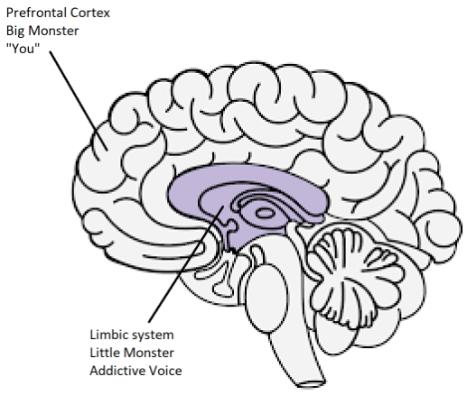

Resources リソース¶
Meditations of a Porn Addict - Guillaco
EasyPeasy Statements Checklist - SWATxKATS
9 Minute Meditation - Sam Harris
Waking Up Meditation Course - Sam Harris
Exiting Modernity - Meta Nomad // (pdf)
Freedom Forever (PMO Hacknotes)
Why you're relapsing - u/Different_Guide_5205
Countering Fear - u/Different_Guide_5205
REBT Coping Statements¶
(Rational Emotive Behavior Therapy 人生哲学感情心理学のコーピング提言）（＊1950年Albert Ellisによって導入された、感情や行動の問題につながっているかもしれない非理性的な思考やネガティブな思考パターンを特定する役に立つ。これらの思考パターンが特定されれば、セラピストはあなたがそれらをより理性的な思考パターンに置換するための戦略を育む助けをする）
・「私はPMOをやめることができる、それが”難しく”見えたとしても。難しすぎるわけではない、どれだけ問題があろうとも、これをやめる価値はある」
・「もし私が、自分の強力なPMO衝動を無視し続け、絶対に屈しなければ、その衝動に抵抗することはより簡単になってゆく」
・「私は完全に無条件で自分を受け入れることができる、自分の過ちや失敗もすべて一緒に」
・「PMOは速やかに私の問題を”治して”いるように見えるが、実際には、悪化させている」
・「時々、私は自分の問題をPMOに沈めたくなる、だが、それは私がPMOをする理由にはならない」
・「最も不快なのは、自分が本当に求めているものが何か理解できなかった時だ。だが、それは、酷くも最悪でもない、私がそれをそうであると信じる選択をしない限りは。そして私は、より現実的で役に立つものを信じる選択をする」
・「私は不当な扱いを好むことは、決してない、私はそれに何があっても対抗する、それを止めるために計略するだろう」
・「何度この重要な活動に失敗しようと、私の失敗が私を無能なシラミにすることはない。それは、ただ、私を、その時は無能なことをしたかもしれない人間にするだけだ」
・「私は、自分がほしいものを、絶対に、必要としていない、それでも私は十分に幸せである、だが、私がそれを手に入れられなかった時ほどは幸せではない」
・「私は、自分の仕事で傑出することを強く好む、だが、私はそうでなくてはならないわけではない。私がそうでない時は、残念だ、だが、それは私を劣等にするわけではない。私は、常に、上達する必要がない上で、上達しようとし続けることができる」
・「多くのものが私を残念がらせ、失望させることに助力することがある、だが、私が、それらが存在してはならないものだと、要求し命令する時、私は自分で自分をパニックにさせ、抑うつさせ、激怒させている」
・「そうだとも、私は、自分がする、と約束したことをよく失敗する、だがそれは、私にはこの約束を果たすことができない、もしくは、しようとしていない、という意味ではない」
・「私は、心配し落ち込んでいることが心底嫌いだ、だが、私は、これらの感情を即座にPMOで消す必要はない。PMOをしていると、私は、自分の問題について、一時的に、気持ちは改善しているが、私は改善していない。長期的に見て、PMOは問題を悪化させる」
・「人々は、私に、酷い扱いをすることで、私を憤慨させることはできない。私は意固地になって、彼らに、ましな態度を取れ、と要求し命令することで、彼らを酷く扱い、自分を憤慨させる」
Combining EasyPeasy with Jack Trimpey's Addictive Voice Recognition Technique(AVRT) （EasyPeasyとジャック・トリンピーのAVRT（依存症の声を認識する技法）を組み合わせる）¶
discordのaz#8773による
これは、洗脳を除去したにも関わらず、アレン・カーのEasywayメソッドを、依存症からの回復に用いることに苦労している人たち向けである。私は、この本を読んだ人は、アレン・カーのいずれかの本を読んだことがあり、彼のEasyway（またの名をEasyPeasy ）メソッドを理解していたと推測する。そうでないなら、私は強く読むことを勧める。また、もし、あなたが、ジャック・トリンピーの「Rational Recovery」を読んでいたなら役に立ったことだろう。読んだことがないなら、問題ない、私がこれからその基礎をここで扱う、だが、いずれにせよ、その本は読むことを勧める、私がするよりも、遥かに詳細に書かれている。これは、誰か特定の依存症患者に向けられたものではない、ゆえに、すべての依存症に応用できる。この文の目的は、EasyPeasyを他の成功している「Addictive Voice Recognition Technique」と呼ばれる依存症回復メソッドと比べること、そして、この二つを組み合わせること、にある。私は、Easywayが、その他すべての依存症回復メソッドよりも、遥かに、優れていると信じているが、AVRTも理解することは、大きな怪物を殺したにも関わらずEasywayを使うことに失敗した多くの人たちの、ミッシングリンク（謎を解く鍵）になると信じる。
たくさんの競争力のある依存症克服メソッドが存在しており、それぞれの成功率は異なる。それらについては言及しない、なぜなら、ほとんどが時間の無駄であり、私はこれを可能な限り手短にしておきたい。私が、これから書くのは、アレン・カーのEasywayと（Rational Recoveryの設立者である）ジャック・トリンピーのAVRTについてだけである。この二つのメソッドは、どちらも極めて高い成功率を持つ、だが、それぞれ異なるものを目的としている。EasywayとAVRTは、実際に、類似している、Easywayは依存症を「小さな怪物」と「大きな怪物」に区分し、AVRTは、あなたの思考を「Addictive Voice アディクティブ・ボイス 」（またの名をthe beast、ザ・ビースト、獣）と「You（あなた）」に区分する。アディクティブ・ボイス（依存症の声）と小さな怪物は同じものである、そして、大きな怪物（別名：洗脳）は、あなたが固持する思考体系で、あなたの依存症はあなたに何らかの恩恵や支えを与えている、とあなたに思わせる。Easywayは、心理的な依存症を破壊する、一方で、AVRTは、物理的な依存症がyou（あなた）を装っていることを認知すること、そして、自分自身をそこから分離すること、をあなたに教える。私はEasywayとAVRTが、それぞれ反対のものに焦点を絞っているのに、どちらも高い成功率を持つことが面白いと思った。
私は、Easywayがその他すべての依存症回復メソッドより、遥かに、優れていると信じていて、その他のすべてよりもお勧めているが、私はEasywayには、二つの小さな穴（誤り）を指摘できると思う。まず、一つは、私は、それが小さな怪物を過小評価していると感じること。
Easywayの基本の核は、次のようなものである。この依存症は二つの構成要素から成る、身体的なドーパミンへの依存症と、あなたの依存症はあなたに何らかの喜びや支えを与えているという信念によって作られている（洗脳という）心理的な依存症である。これらは、それぞれ、小さな怪物、大きな怪物と呼ばれる。Easywayによれば、この小さな怪物は、ほとんど感知できない、空虚な僅かに落ち着かない感覚、に過ぎない。あなたが、如何に自分の依存症には何の恩恵もなく、如何に喜びや支えとして感知されるものがただの幻想であるか、また同様に重要なこととして、如何に自分が依存しているものがなくなった生活を恐れることは何もないか、を学習することで洗脳を解除しこの大きな怪物を殺せば、そのクレイビング（切望）は消え去る。
クレイビング（切望）は、自分の小さな支えがなくなった生活は耐え難いものになってしまうという恐怖から派生し、この恐怖はあなたに依存症をやめることに対する疑問を生じさせる、これがクレイビング（切望）である。あなたは、依存症のない自分の人生がどれほど遥かに楽しいものになるかを自覚し、その歓喜の感覚を維持することで、この恐怖を乗り越える。
私は、これが依存症から回復するための手段としては最善だと信じるが、一方で、この手段は小さな怪物を強調しない、理論上は、大きな怪物が処置されれば、無力で救いのない小さな怪物はただ枯れてゆき勝手に死ぬ、そして、いずれにせよそれは感知できない程度のもので誰も気にしない。この小さな怪物は、多くの人たちにとっては、取るに足りないものかもしれない、だが私自身の経験と他の人たちの経験から、すべてがそうではないと思われる。Easywayで失敗した場合、Easywayによれば、あり得る理由は二つだけで、あなたが指示を適切に従えなかったか、もしくは、あなたが大きな怪物の除去に失敗したか。私はこれは有害だと考える、理由は後で説明する。
Addictive Voice Recognition Technique(AVRT)は脳を二つの部分に分離する、あなたの依存症が住む下部脳（大脳辺縁系）と、あなた（もしくは、少なくともあなたの思考と自我）が住む上部脳（前頭前皮質）。ジャック・トリンピーは、依存症の声を、ビースト（獣）と呼ぶ、なぜなら、それは我々の脳の動物の部分に住んでいるからであり、それは一つのことしか知らないからだ、「私はそれがほしい、私は今すぐそれがほしい」。私自身は、それを動物として擬人化することが役に立つとは思わないが、それが自分自身であると信じるよりはマシだと思う。アディクティブ・ボイス（AV、依存症の声、小さな怪物）は、あなたの心の声をハイジャック（乗っ取り）する、そして、それをyou（あなた）に対し使い、あなたをあなたの依存症に耽らせる。それが、こんなことをする必要があるのは、それは、あなたのmoter function（運動機能、運動ニューロンを使うことで完成される動きや動作の総称）自体を制御できないから。あなたは、今、これを試すことができる、自分の手を顔の前に持ってくる、そして手を小刻みに揺らす。では今度は、自分の依存症に同じことをするように求める。それにはできない。これが意味するのは、ここではあなたが、最終的な、制御を持っているということ。
ーーー

脳の図解
前頭前皮質（大きな怪物、’You あなた’）
大脳辺縁系（小さな怪物、'アディクティブ・ボイス 依存症の声'）
ーーー
このAVは、あなたの心の声をハイジャックするだけでなく、あなたを欺いて代名詞である、「I（アイ、私）」、の後ろに隠れる。それは言う「私は今ごろ、Xが、できてたはずだよなあ」、「私は、確かに、Xができなくて寂しい」、「今すぐXすれば最高じゃね？、結局、明日、私はそれをする権利がある」。AVRTは、あなたはこの依存症の声ではない、あなたがそれが自分だと思っているだけ、という事実を強調する。あなたが、AVを自分ではないと自覚し、それにノーと言うと、それは、「I（私）」と言うのをやめて、「you あなた」や、「us 我々の」、「we 我々は」を使い始める。これがあなたが、youではない証拠である。
あなたが、自分のAVにノーと言うと、これが起きる：「私は今ごろ、Xができていたはずだよなあ」は、「おいおい、お前は今ごろ、Xができてたはずだろ、お前もそれをわかってるだろ」になる。「私は、確かに、Xができなくて寂しい」は、「おいおい、お前は間違いなくXができなくて寂しいんだよ、お前もそう思うだろ？」になる。「今すぐXすれば最高じゃね？、結局、明日、私はそれをする権利がある（するに相応しい）」は、「我々は今すぐXをするに相応しい、結局我々はひどい目にあってきたんだし、これは否定できないよな？」になる。
ここで、私は、はっきりしておく必要があると思う。これはアレン・カーが指摘した「綱引き」ではない。「綱引き」は、認知的不協和である、それにおいては、あなたは、二つないしはそれ以上の相争う思考体系を持っている、それは大きな怪物を殺していない結果である。「私は、それはこのネガティブな作用を私に与えるので、本当にXするのをやめたい、でもそれは私をXにすることもある、だから私はXをしたい」。これが「綱引き」であり、大きな怪物のすることである。洗脳を除去することで、大きな怪物が死ねば、あなたに自分の依存症に耽るようにいう声は小さな怪物（AV、依存症の声）から来るものだけになる。このAV（依存症の声）は代名詞の「I（私）」を使うので、AV（依存症の声）を、大きな怪物と混同してしまう可能性はある。
AV（依存症の声）は、とんでもない嘘つきである、ということを指摘しておくのも重要だ。それが気にかけているのは、唯一、どんなものを代償にしても、ドーパミンを手に入れることだけ。あなたのAV（依存症の声）は、あなたに、命取りになりかねない危険な状況に身を置くように説得するだろう、もしそれでフィクス（麻薬注射、麻薬成分摂取）が手に入るのなら。
私は、「Easywayで失敗した場合、Easywayによれば、あり得る理由は二つだけで、あなたが指示を適切に従えなかったか、もしくは、あなたが大きな怪物の除去に失敗したか。私はこれは有害だと考える、理由は後で説明する」と述べた。私がこれを有害だと考える理由は、AV（依存症の声）を認識することに失敗したことで、Easywayを使った私自身とその他の人たちは、自分たちは、まだ完全に、大きな怪物を殺せていないんだと誤解し、我々は、既に大きな怪物を殺していたにも関わらず、この本を再読し、もう一度大きな怪物を殺そうとしてしまった。AV（依存症の声）を認識することの失敗が、「Easywayで失敗した場合、それはあなたが大きな怪物を殺すことに失敗したということだ」という信念と組み合わると、あなたは、大きな怪物にもう一度注力させられることになる、それは既に倒されているにも関わらず。最終的に、あなたは、アレン・カーの本を何度も繰り返し再読することになるかもしれない、しばらくはやめられるが、その後再発する、そしてそれを何度も繰り返す。
AV（依存症の声）が「私は今すぐXがしたい、なぜならそれは私をXにするからだ」というようなことを言う場合に、もしあなたが洗脳を解除し、大きな怪物を除去していたら、あなたは、「私はこれが真実でないことを知っているのに、なぜ私は、未だに、それが真実だと信じているんだ？私は完全には洗脳を解除できていないのか？」と思うかもしれない。ここで起こっている真実とは、あなたは洗脳を除去できている、これは、あなたが、AV（依存症の声）があなたに語りかける以上のことをわかっているという事実によって証明されている、それは、ただ、あなたが、AV（依存症の声）が代名詞である「I（私）」を使うので、それを自分だと思っている、ということ。AV（依存症の声）を認識し、「I（私）」を剥がして、「you（あなた）」や、「we（我々）」、「us（我々の）」とすることで、強制的に正体を露わにさせれば、そこに居るのが大きな怪物ではなく、小さな怪物であるということが確認できるはずだ。もし、それが本当に大きな怪物だとすれば、それは「I（私）」を「you（あなた）」や、「we（我々）」、「us（我々の）」に置き換えることはしないだろう。
では、AV（依存症の声）が、「お願いだ、我々はXをもう一回だけできないかな、昔のよしみでさ、あと一回だけ、な？」と言って、そして、あなたが、「ノー」と言う時、あなたは感情的な反応を持つかもしれない。あなたは怖くなったり、悲しくなったりするかもしれない。この感情はあなた自身から来ているものではなく、それ、から来ているものだと認識することが極めて重要である。もし、あなたがAV（依存症の声）を認識できない場合、あなたは、この感情が自分自身から来ていると思い、屈服しやすくなる。AV（依存症の声）と、その感情が、自分自身ではなく、そこから来ているという事実を認識してほしい、そうすれば、これも楽しく感じられる。
あなたが、この二つの手段を一つに合わせ、（もし、必要ならばということ、全員が小さな怪物で問題を抱えているわけではなさそうなので）、あなたがAV（依存症の声）を認識した時に、いつでも、楽しさと喜びの感情を維持すれば、成功はあなたのものだ。